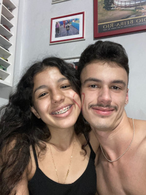
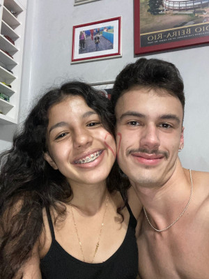

Obrigado... Muito obrigado minha menina
Isso aqui é só uma pequena maneira de te agradecer por todo esse tempo ao meu lado. Fiz isso pensando nas coisas que mais gostamos de fazer juntos, e que você também gosta em separado. Fiz isso com o maior carinho e alegria, e assim que minhas técnicas como desenvolvedor estiverem melhores farei coisas mais elaboradas com toda certeza. Fazem 10 meses que estamos juntos, inúmeras coisas aconteceram durante esse tempo, passamos por momentos tão complicados, outros tão felizes, choros, alegrias e muitas risadas, perdas e muitas conquistas. Obrigado por nunca desistir e abrir mão de tantas coisas por nós, coisas que eu nem pedi mas você mesmo assim as fez. E o mais importante de tudo, sempre nos apoiamos, e puxamos o outro para ser uma pessoa melhor todos os dias. A única coisa que eu sinto quando eu olho hoje pra você é orgulho, paz e uma alegria imensa de ter você comigo na minha vida
 

Você vai ser pra sempre minha pessoa favorita, nunca vai existir alguém igual. Meu desejo é ter uma vida toda contigo, meu sonho é daqui alguns anos nós olharmos para trás e dizer: 'nós conseguimos'. E sei que vamos conseguir meu amor. Eu agradeço todos os dias por ter você comigo, você nem tem noção do quanto você me faz bem, você sabe como lidar comigo de um jeito especial, um jeito que só você consegue meu amor.

Feliz dia dia dos namorados minha vida.O primeiro de muitos que teremos juntos. Você é tão especial e unica, nao vejo ninguem igual a voce, acho que acabei até acostumando não muito bem né amor kkkk, sempre querendo teu denguinho e teu drama de sempre quadno eu digo 'não' pra alguma coisa. Quando tu quer teus beijinhos, tudo isso te torna tão unica e especial. Nem consigo esperar pelo dia em que vou poder acordar do teu lado todos os dias e poder olhar pra você dormindo, vivendo a vida com a pessoa que eu mais amo nesse mundo. Te amo pra sempre amor...